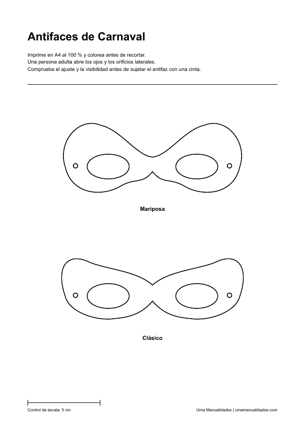

Antifaces de Carnaval para imprimir y colorear
Descarga dos antifaces de papel en una hoja A4: una mariposa y un antifaz clásico. Coloréalos y móntalos con una cinta.
Descargar antifaces de Carnaval (PDF A4)
Dos modelos para elegir

Cómo hacer el antifaz de papel
- Imprime la hoja A4 a tamaño real. Colorea el modelo antes de recortarlo.
- Recorta el contorno. Una persona adulta puede abrir los ojos y hacer los dos agujeros laterales. Comprueba que la separación y el tamaño de los ojos permiten ver bien.
- Refuerza el reverso de los orificios con cinta adhesiva si has usado papel fino. Pasa una cinta suave por cada orificio y ajusta sin apretar.
Si prefieres calcar un molde sobre goma EVA, consulta las máscaras de animales de foami. Para seguir practicando, encuentra más manualidades para niños.